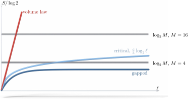

Page 12 of 12 of this session
7.12 Closing summary
We started from three things that we built before. These were the general interacting Hamiltonian and the mean-field method of Section 1.12, the Heisenberg model (6.5) of Session 6, and the frustrated magnets of Section 6.10, where no order parameter appears. In this session we saw the following.
Strongly correlated matter, which includes quantum spin liquids and fractional Chern insulators, is the regime where no mean-field decoupling gives the true ground state. We saw this with (7.1) in Section 7.1.
The Jordan-Wigner transformation (7.2) is an exact mapping between fermionic and spin-1/2 Hamiltonians, and in short spin equals fermion times string. It links the fermionic language of Sessions 1 to 5 with the spin language of Session 6 and Session 8. For this reason we could work in the spin representation for the rest of the session.
The real obstruction to solving many-body Hamiltonians is storage, since a system of \(L\) spins needs \(2^L\) coefficients (7.4) to describe its wave function exactly.
The matrix product state ansatz (7.5) replaces these \(2^L\) coefficients with \(O(L\chi^2)\) parameters. We give up exactness and get an approximation that we control with the bond dimension \(\chi\).
The entanglement entropy (7.6), which we computed for the singlet in (7.7), measures how entangled a state is. Exactly solvable dimer and tetramer models show that gapped ground states follow an area law (7.9), with an entropy set by the length of the boundary and not by the volume of the subsystem.
The entanglement of an MPS is itself bounded, \(S \le \log \chi\) (7.10). This is the reason why MPS work so well in 1D, where the area law saturates, and why they need an exponentially large \(\chi\) in higher dimensions or away from the ground state.
Ground states are found variationally, by minimizing (7.11) one tensor at a time, and this sweeping procedure is the DMRG algorithm.
MERA extends tensor networks to criticality, through the logarithmic correction to the entropy (7.12), and PEPS extend them to real 2D lattices. MERA can still be optimized tensor by tensor. For PEPS the contraction is the hard step, so the simple local optimization of DMRG is lost.
Neural network quantum states are a second answer to the same storage problem, and we did not develop them in this session.

After this session we can do the following tasks, and each of them has the section that teaches it.
- Map a spin-1/2 chain to spinless fermions with the string, and see when the string cancels. This is in Section 7.2b.
- Count the coefficients of an exact state and the numbers of an MPS of bond dimension \(\chi\). This is in Section 7.3 and Section 7.4.
- Compute the entanglement entropy of a two-spin state and of a product of singlets. This is in Section 7.5 and Section 7.6.
- Tell an area law from a volume law, and count the cut bonds of a region in one and two dimensions. This is in Section 7.7.
- Compute the entropy of a cut from its Schmidt weights, and compare it with \(S\le\log \chi\), which gives only a lower bound on \(\chi\). Find the weight that a smaller \(\chi\) drops. This is in Section 7.8a.
- Say why a quench, a 2D lattice or a highly excited state needs an exponentially large \(\chi\). This is in Section 7.8b.
- Read a tensor diagram and give the bond dimension after an MPO. This is in Section 7.9.
- Explain why a DMRG sweep never raises the energy. This is in Section 7.10.
- Say which network fits a critical chain and which one fits a 2D lattice. This is in Section 7.11.
An MPS of \(L\) spins one-half writes each coefficient of the state as
\[C(s_1,\dots,s_L) \approx M^{s_1}_1\, M^{s_2}_2 \cdots M^{s_L}_L.\]
Each \(M^{s_i}_i\) is a matrix of size \(\chi\times \chi\), and \(s_i\) takes two values. At the two ends they are vectors. About how many numbers does the MPS store?
Show the answers
- A. ✓ True
This is true. Each site has two matrices, one for each value of \(s_i\), and each matrix has \(\chi^2\) numbers. For \(L=100\) and \(\chi=10\) this is \(2\times10^4\) numbers. The matrices at the two ends are smaller, so the exact count is a bit lower.
- B. ✗ False
This is false. \(2^L\) is the number of coefficients of the exact state, which the MPS replaces. For \(L=100\) it is \(1.3\times10^{30}\), while the MPS with \(\chi=10\) stores about \(2\times10^4\) numbers.
- C. ✗ False
This is false. Take \(\chi=1\), which is a product state. Then \(\chi^L=1\) for any \(L\), but the MPS still stores two numbers on every site, \(2L\) in total.
An MPS with \(\chi=20\) describes a gapped chain of 200 sites very well. We now move to a gapped model on a \(20\times20\) lattice. What do we expect?
Show the answers
- A. ✗ False
This is false. Being gapped fixes the entropy per bond. The cut of the \(20\times20\) lattice crosses 20 bonds, so the entropy is about 20 times larger and the needed \(\chi\) is of the order of \(20^{20}\approx10^{26}\).
- B. ✓ True
This is true. A gapped state obeys the area law in both cases, but in two dimensions the boundary has 20 bonds and not one. The entropy grows in proportion, and the bond dimension that it needs grows exponentially.
- C. ✗ False
This is false. A gapped chain of 2000 sites needs the same \(\chi=20\) as the one of 200, so the number of sites alone does not matter. A \(20\times20\) lattice has just 400 sites.
- In Session 8 the singlet (7.3) becomes the resonating valence bond state of a frustrated lattice, in Section 8.6, and the dimerized chain comes back as the valence bond solid of Section 8.5.
- In Section 10.3 neural network quantum states replace the table of \(2^L\) coefficients, and they are trained with the variational energy as the loss.
- In Section 10.4 the MPS, MERA and PEPS of this session are used as architectures for machine-learning classifiers.